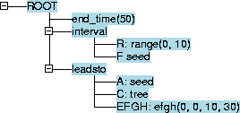

lteditor.
The leadsto simulation program may be used to perform the following operations:
There are two versions of the simulation program:
leadsto
ltbare
ltbare --helpor
leadsto --helpor
ttlchecker --helpwill output information on command line options.
Installation Instructions for Windows
Install the leadsto software by running the setup executable
install_leadsto.exe.
\\tornado\practica.
ltwrk is created in your home directory.
T:\AI\projects\setupltsim: This
creates a directory ltwrk with an ltwrk/examples sub-directory. It also places shortcuts on your desktop.
leadsto icon on
the desktop to run a simulation,
ttlchecker icon on
the desktop to create/edit or check TTL-formulae.
ltrhlinux71.tgz or another obviously linux installation tgz file.
$ tar -zxf ltrhlinux71.tgz
lt/.
$ cd lt/plrt/bin;./chplhd
leadsto by executing lt/bin/leadsto. Other programs are available in the lt/bin/ directory. You should probably
add lt/bin/ to your PATH environment
variable. $ export LD_LIBRARY_PATH=your_install_dir/lt/lib:$LD_LIBRARY_PATH $ your_install_dir/lt/bin/leadstoThis will load the readline library in the lt directory instead of the one in your linux installation. You could write a script that contains this setting of
LD_LIBRARY_PATH.
lteditor icon on your desktop.
On unix, execute lteditor.
The white canvas will contain the tree representation of your specification. Initially there is one node, named ROOT. Manipulation of nodes is possible by right clicking with your mouse pointing to the node. All elements of your specification will be branches of this ROOT node.
Suppose you wish to specify that atom seed is true between times 0 and 10:
seed o-->> tree with
parameters e= 0, f = 0, g = 1, h = 1:

A separate editor for ttl-formula called ttleditoris available, but the ttl-formula checker ttlchecker itself allows you to create and check formula
in one GUI.
leadsto may be loaded into the checker.
If you wish to load different traces, after doing a simulation, rename the
generated trace file trace.tr to some other file,
such as sugarscape.tr
ttlchecker(by double clicking the shortcut
on windows or executing ttlchecker on unix/linux).
.lt
specifications by copying such files into .fm files
and reading them in. Unrecognised leadsto elements will then be ignored and
when you save the loaded ttl-specification, only ttl-elements will remain.
generated_compacted_trace_trace1.tr,
generated_compacted_trace_trace2.tr etc.
Reload these trace files into leadsto by selecting load in leadsto
and changing Filter: into Trace in the file chooser window.
var:sort everywhere in your formulae where you would use var.
a(e, pi) will be interpreted as a(2.718.., 3.141..).
model1.lt (from the examples) into your lteditor.
MODEL m1(D:between(10,12))introduces a constant
D in the leadsto specification.
Three traces will be produced for D=10,D=11,D=12.
D may be used as a constant almost everywhere. Detection is not
complete yet (probably not detected in sort definitions), if you miss
some substitution, e-mail lourens please.
In this example D is used as the delay parameter in a leadsto
rule.
model1.lt into leadsto. Traces will be generated and all
traces are gathered in one trace file (defaulting to trace.tr).
model1.fm into ttlchecker.
Next load the trace file (trace.tr) through the GUI:
File->TraceManagement. As first trace you will now see
m1(D:between(10,12)). But this is a set of traces.
Sort TRACE will contain m1(10),m1(11), m1(12).
model(modelname(Name1:Sort1,Name2:Sort2,..,NameN)) in your leadsto specification, constants
Name1, Name2,.. NameN may be used in your leadsto specification.
The value of NameI will be instantiated to an element in
SortI. Th3e leadsto program will generate just as much traces
as there are instantiations of Name1,..NameN.
The name of a specific trace will be modelname(Value1,Value2,..ValueN).
There is no magical improvement in performance! Generating N traces still takes N times as much time as generating a single trace.
model(m1(Delay:between(10, 12))). interval([], range(0, 1), a). leadsto([], a, b, efgh(Delay, Delay, 1, 1)).In trace
m1(10) constant Delay will have value 10,
in m1(11) constant Delay is 11.
Loading the trace file into a ttl specification will add objects/terms
m1(10),m1(11),m1(12) to sort TRACE and have those
three traces loaded.
leadsto -noshow -graphview g1 -graphinit spec/highlevel2a.nl -displaytrace highlevel2.tr
-noshow suppresses the leadsto window(although the trace remains visible), -graphview g1 currently only results in showing the graph -graphinit FILE ensures that a previously saved initial situation is restored. -displaytrace File ensures that a certain trace will be loaded.
.xpce
of your working directory in a file LeadsTo.cnf. You may perform different experiments in different directories and so have different stored settings.
Some properties do not function yet. all Graph Sub Properties will have effect. There is a minimal amount of documentation with each property. <
Some details:
STEP, LEAP and RESET
to the communication analysis window: Once a trace is loaded into the
communication tool, you may activate all communications step by step
one after another by repeatedly pressing STEP. If you wish to
run through the rest of the communication, press LEAP. If you wish
to go back to the intial communication situation, press RESET.
output(From)|communication_from_to(From, To, T1, T2)
are considered and the contents of T1 and T2 are
ignored. In principle as soon as such an atom becomes true, a connection is made between two nodes named From and To.
highlevel2.lt example.
highlevel2a.nl initial settings.
Under certain restrictions you may use variables of countably infinite sorts in formulae. In existential quantifiers
exists([..X:infinite_sort,..], Formula)
the first occurrence of X in Formula should be in
a positive holds subformula.
Any other occurrences, such as in comparisons should be after that
first occurrence.
In universal quantifiers
forall([..X:infinite_sort,..], Formula)
Formula must be an implication:
Formula = implies(F1, F2) and first occurrence of X in F1 should be in
a positive holds subformula.
The "first-occurrence-of-variable-in-positiveholds" of variable
X in formula F says that if F is a conjunction of subformulae, that
if there is a subformula where X occurs first (from left to
right), it must be in a holds term. Within this subformula the same
property should hold(recursively).
A subformula could also be an existential quantification. In that case if X occurs in the existential quantification sub formula, its first occurrence there should be in a positive holds subformula (recursively).
A subformula could also be a unification, consisting of a toplevel implication, i.e.
forall(... , implies(F1, F2))Here if X occurs in implies(F1, F2) then the first occurrence of X in formula should be in a positive holds subformula of F1.
Any variable having the first-occurrence-in-positive-holds property will be much more efficiently coded. For infinite sorts the property must hold.
For the time being we do not allow the first-occurrence-in-positive-holds
occurrence to be preceeded by a disjunction of which one branch binds
X, but the other one does not.
The checker has as input a trace of holds facts that are true/false for finite REAL time intervals.
The checker does not allow using REALS as time parameters to test properties, as there are infinitely many times that a holds fact is true if there are any holds facts in the trace.
The checker analyses the formula and determines what holds facts are present in the formula. After that the checker determines what REAL time intervals occur in the trace. The intervals are made maximal, i.e. all consecutive intervals that have identical holds values are taken together.
This leads to a number of intervals NI. A builtin sort has a range between 0 and NI - 1. There are different names for this sort. The preferred one is "interval".
In formulae there are functions available for values of the lower and upper bounds:
denotes(ep2s,
forall([t:interval >= interval(24), e3:integer],
implies(holds(state(trace1,time(t:interval)),
day_used_energy(e3:integer),true),
e3:integer = 8
)
)
).
In case you prepare your own text file:
The specification has a prolog-like syntax and
is read from this file (the graphical editor writes such text files).
Major characteristics of this prolog syntax are:
constant(<Name-Term>, <Value-Term>).:
<Name-Term> by <Value-Term>
wherever it occurs in the specification.
cwa,
display*, model, start_time, end_time, global_lambda specification elements.
start_time(<Time>).
end_time(<Time>).
interval(<Vars>,range(<Start-Time>, <End-Time>),
<AndLiterals>).
<Start-Time> - <End-Time>
for all instances of <Vars>, for exampleinterval([x:between(1,10), y:between(1,10)<x],0, 10, and(f(x,y),not(g(x,x)))).
Remarks:
between(1,10) here. So sorts
may have parameters. between(L:INTEGER,H:INTEGER)
<Range> argument, or even use a variable, as long as it
simplifies/instantiates to range(<Start-Time>, <End-Time>)
<Vars> may occur anywhere in the
rest of the interval specification.
interval(<Vars>, <Start-Time>, <End-Time>,
<AndLiterals>).
interval( <Start-Time>,<End-Time>, <AndLiterals>).
periodic(<Vars>, range(<Start-Time>, <End-Time>),<Period-Time>,<AndLiterals>).
periodic(<Vars>, <Start-Time>, <End-Time>,<Period-Time>,<AndLiterals>).
cwa(<VarAtom>).
global_lambda(<Factor>).
leadsto(<Global-Vars>, <LHS-Formula>, <RHS-Formula>, <Delay>).
forall(<Local-Vars>, <Formula>) construct
will be completely instantiated and replaced by an and construct.
<Local-Vars> construct refers
to a variable in <Global-Vars> then these global-variables
will also lead to partially instantiated rules.
<Global-Vars> says that there is a rule for each
instantiation of <Global-Vars>.
<Global-Vars> should preferably occur
in <LHS-Formula> as well as in <RHS-Formula>.
leadsto(<Formula>, <Formula>, <Delay>).sortdef(<Sort-Name>, [<Ground-Term>,...]).[ and ] are list delimiters,
not optional grammar meta info):Define sort as list of elements (sort name and objects may contain arguments, but for the time being they better not contain variables.
display_number_range(<VarAtom>,<PrologVar>, <Relation-Tag-Name>, <Variable-Tag-Name>)
examples/test/expfn.lt.
The first versions of the leadsto editor will not support display_number_range.
display(ViewTag,Data)
control what to show how. ViewTag is a tag that determines what view
is active. It may be controlled by the commandline option
-view ViewTag.
display(ViewTag, show_atoms(SomeAtom))
display(ViewTag, no_show_atoms(SomeAtom))
display(ViewTag,sort_atoms_global)
display(ViewTag,sort_atoms_time_global)
display(ViewTag,sort_atoms_time_abc_global)
display(ViewTag,sort_atoms_time)
display(ViewTag, show_atoms(SomeAtom)) internally in time order as defined in display(ViewTag,sort_atoms_time_global).
z, y(a), y(b), a(b,c), b(a,a)is sorted.
sortdef(<Sort-Name>, [<Ground-Term>,...]).
sort_element(s(X), Y) :-
member(Y, [f(X), g(X), h])
leading to s(1 + 3) having elements f(4), g(4) and h.
This allows more complex sort definitions. But the leadsto editor does not
support such constructs.
REAL
INTEGER
between(I1, I2)
x: x >= I1 and x <= I2
<:Vars> list should not be
part of an operation.
Print will print to an installed printer on windows
or send to the printer on solaris
at the VU (executes lpr -P $PRINTER tmpfile.ps).
leadsto simulation session produces a file trace.tr
which gets overwritten each simulation. If you wish to keep it,
rename the trace.pl file. To inspect the trace, run leadsto -displaytrace TRACEFILE.
output(R:'ROLE')|relation(arg1,..) input(R:'ROLE')|relation(arg1,..) internal(R:'ROLE')|relation(arg1,..)lead to holds relations in the ttl formulae:
holds(state(trace1, t1, output(R:'ROLE')), relation(arg1,..), trueorfalse) holds(state(trace1, t1, input(R:'ROLE')), relation(arg1,..), trueorfalse) holds(state(trace1, t1, internal(R:'ROLE')), relation(arg1,..), trueorfalse)The checker software needs this syntax of defining role/input/output.
Variables may occur almost everywhere in leadsto rules and interval rules. If those variables obey certain requirements, they may even be of infinite sorts. These requirements will follow in the next paragraph. If these requirements are not met for some variable, the variables will be instantiated, leading to the generation of one rule per variable instantiation.
Leads to rules may contain variables of non finite domains. There are severe restrictions on the use of such variables:
leadsto([x:'INTEGER'], a(x), b(x), efgh(1, 1, x, x)).
leadsto([x:'INTEGER'< 10], a(x), b(x), efgh(0,0,1,1)).
leadsto([], forall([x:'INTEGER'],a(x)) , b, efgh(0,0,1,1)).
leadsto([x:'INTEGER'], forall([y:between(1,x)],a(y), b(x), efgh(1, 1, x, x)). leadsto([x:'INTEGER'], forall([y:between(1,3)< x + 2],a(y), b(x), efgh(1, 1, x, x)).
Local variables will be completely instantiated, internally transforming forall quantifiers into conjunctions.
Global variables are analysed for their occurrence in the body of the rule. If they occurs in places defined above as NOT ALLOWED, those variables will lead to instantiation as well, i.e. for each instantiation of those NOT ALLOWED variables, a rule is instantiated.
leadsto([x:between(1, 1000)], a(x), b(x+1), efgh(0,0,1,1)).will not be instantiated and will have good performance.
leadsto([x:between(1, 1000), y:between(x,x+1)], a(x), b(x), efgh(0,0,1,1)).will instantiate into 1000 rules.
leadsto([x:between(1, 3), y:between(x,1000)], a(x,y), b(y+1), efgh(0,0,1,1)).is ok: x will be instantiated, but y will not.
***ERROR:Delays must all be numbers >= 0, not all 0, if H = 0 then G must be 0, GOT efgh(0, 0, 0, 0) WARNING:Leadsto rule or interval has no instances
FATAL ERROR:No progress, probably used too much 0 time parameters...
A(p,R) must be written as
'A'(p,'R').
content(SomeValue).The checker recognizes and uses:
content(source(file(FileName, Parts)).where parts is a prolog list, the checker only handles an entry
path(Path) in the Parts list; if such
an entry is present, it interprets that as filename of the generating source,
otherwise it uses FileName.
content(run(RunData)).where
Rundata is a prolog list; the checker only recognises
an entry date(Date) as the (modified/creation) date of the
generating source file.
See the GUI for "trace management" in the checker for how the data is presented.
content(type(savedtrace('spec/simple.lt'))).
content(source(file('spec/simple.lt', [size(214), path('f:/cygwin/home/lourens/wrk/ww/db3/pl/spec/simple.lt')]))).
content(run([date('Thu Aug 19 10:43:03 2004')])).
atom_trace(tree, tree, [range(870.0, 1020.0, true), range(740.0, 870.0, false), range(590.0, 740.0, true), range(460.0, 590.0, false), range(310, 460.0, true), range(180, 310, false), range(30, 180, true), range(0, 30, false)]).
atom_trace(blossom, blossom, [range(960.0, 1110.0, true), range(830.0, 960.0, false), range(680.0, 830.0, true), range(550.0, 680.0, false), range(400.0, 550.0, true), range(270.0, 400.0, false), range(120.0, 270.0, true), range(0, 120.0, false)]).
atom_trace(seed, seed, [range(860.0, 1000, false), range(840.0, 860.0, true), range(580.0, 840.0, false), range(560.0, 580.0, true), range(300.0, 560.0, false), range(280, 300.0, true), range(20, 280, false), range(0, 20, true)]).
cwa(A).
times(0, 1000.0, 1000).
The atom_trace(AtomKey,Atom, Ranges) entries should speak for
themselves apart from the first argument AtomKey. Later on you
possibly will be allowed to leave out the argument, but for the time being
you should add such an argument. The argument is the "quoted" version of the
Atom argument.
Atom is 'A'(p, 'Q') then AtomKey must be
'\'A\'(p, \'Q\')'. The quoting becomes rather awkward. Best to look at example
traces.
The entry times(StartTime,HandledTime,EndTime).: Just use HandledTime=EndTime.
The times are the start and end times of a trace.
trace(TraceName). for each trace.
There should be an entry model(Model, Size). in the file, where Size is the
number of traces and Model represents the "generating term" for all trace names. (It
is probably only used as an identification of the set of traces in the "trace management" of
the checker.
Expected:
content(source(file('spec/model1.lt', [path('f:/cygwin/home/lourens/wrk/ww/db3/pl/spec/model1.lt']))).
content(run([date('Thu Aug 19 10:18:48 2004')])).
model(m1('D':between(10, 12)), 3).
trace(m1(10)).
atom_trace(m1(10), a, a, [range(1, 200, false), range(0, 1, true)]).
atom_trace(m1(10), b, b, [range(12, 200, unknown), range(11, 12, true), range(0, 11, unknown)]).
cwa(m1(10), a).
times(m1(10), 0, 210, 200).
trace(m1(11)).
atom_trace(m1(11), a, a, [range(1, 200, false), range(0, 1, true)]).
atom_trace(m1(11), b, b, [range(13, 200, unknown), range(12, 13, true), range(0, 12, unknown)]).
cwa(m1(11), a).
times(m1(11), 0, 205, 200).
trace(m1(12)).
atom_trace(m1(12), a, a, [range(1, 200, false), range(0, 1, true)]).
atom_trace(m1(12), b, b, [range(14, 200, unknown), range(13, 14, true), range(0, 13, unknown)]).
cwa(m1(12), a).
times(m1(12), 0, 209, 200).